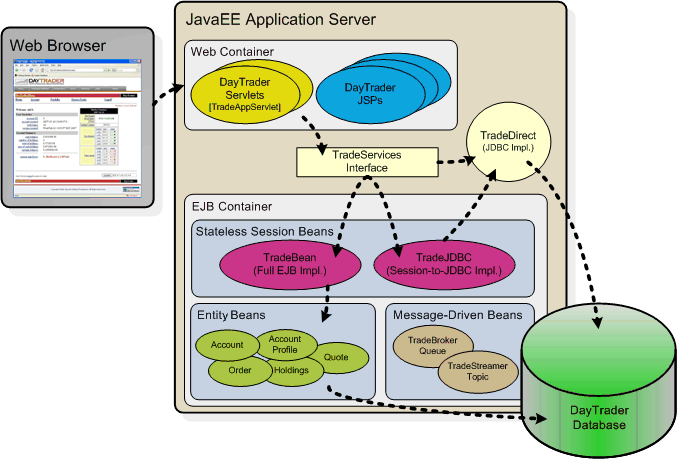

|
Overview
The
Daytrader performance benchmark sample provides a suite of workloads for characterizing performance of
Java EE Application Servers. The workloads
consist of an end to end web application and a full set of primitives. The applications are a
collection of Java classes, Java Servlets, JavaServer Pages, and Enterprise Java
Beans built to open Java EE APIs. Together these provide versatile and portable test cases
designed to measure aspects of scalability and performance.

DayTrader J2EE Components
Model-View-Controller Architecture
DayTrader
DayTrader is an end-to-end benchmark
and performance sample application. It provides a
real world Java EE workload.
DayTrader's new
design spans Java EE 7, including the new WebSockets specification. Other Java EE features include JSPs, Servlets, EJBs, JPA, JDBC, JSF, JMS, MDBs, and
transactions (synchronous and asynchronous/2-phase commit).
Primitives
The Primitives provide a
set of workloads to individually test various
components of an Application Server.
The primitives leverage the DayTrader
application infrastructure to test specific
Java EE components such as the servlet
engine, JSP support, EJB Entitiy, Session and
Message Driven beans, HTTP Session support and
more.
Additional
overview information is included in the FAQ
|